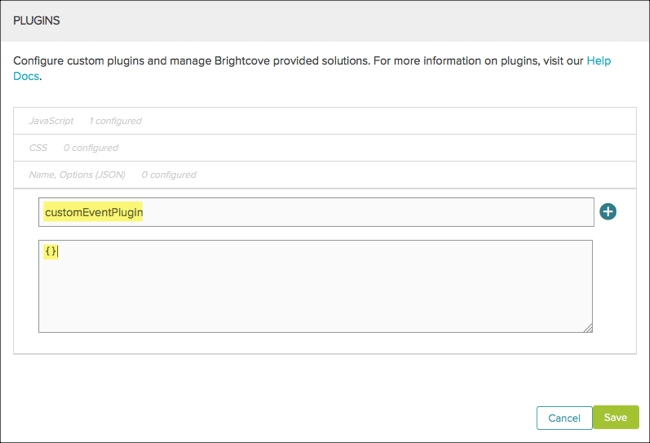

Brightcove Player Sample: Custom Event
This topic shows you how to dispatch and listen for a custom event. Even though the Brightcove player provides a number of out-of-the-box events, you may want to use your own custom events to decouple and eliminate dependencies between DOM objects and event listeners. This event-driven model is an architectural choice that you may want to consider.
This sample adds a back button to the control bar. When the user clicks the back button, a custom event is triggered along with the amount of time to rewind. The custom event listener finds the current video position and rewinds the video.
Development sequence
Select implementation
This sample uses In-Page embed code to interact with page elements and trigger the custom rewind event. Plugin code is used in the player to listen for the custom event and rewind the video based on the data object in the event.
API resources used
The following sections detail resources used from various APIs.
Brightcove Player API methods
currentTime()
Brightcove Player API events
- trigger
- on
The player
Start video playback. Then click on the back button.

You should see that video playback goes back 5 seconds. Change the rewind amount to see how it affects how far the video goes back in time.
The following setting and message box are for demo purposes only, so that you can adjust the value:
Rewind video amount:
How it works
The following sections explain the player, JavaScript and CSS code used in the example.
Create the player
To create a player and assign a video to it, follow these steps:
- In the Players module, create a new player or use an existing one.
- In the Media module, select a video and publish it with this player.Assign video content to the player and publish it.
- Copy the In-Page embed code and paste it into a new HTML file.
For details on how to get this embed code, see the Quick Start to Brightcove Player document.
The embed code should look similar to this:
Custom events
Custom events allow you to decouple and eliminate dependencies between DOM objects and event listeners, creating an event-driven architectural model.
Dispatch
To dispatch a custom event, use the trigger() method as follows:
// trigger a custom event
myPlayer.trigger('eventName');
or
// trigger a custom event with data
myPlayer.trigger('eventName', {data: 'some data'});For details about dispatching custom events, see the Player API index.
In this sample, the code does the following:
- Dispatches a custom event, named
rewind - Sends a data object with a name of
amountand a value of5- You'll see in the JavaScript code where this value is set
Listen
To listen for a custom event, you can use the on() method as follows:
// listen for a custom event
player.on('eventName', function(evt){});
or
// listen for a custom event with data
player.on('eventName', function(evt,data){});You can also use the one() method if you want the event listener to be triggered only once and then removed. For details about listening for events, see the Player API index.
In this sample, the code does the following:
- Listens for a custom event, named
rewind - Passes the event and data objects into a function
When you display the event and data objects in the console, it should look similar to this:

The JavaScript code
The following code shows how we started with the custom event trigger and listener in the page code for testing.
- Lines 38-50: Create the back/rewind button and place it in the spacer element of the control bar.
- Line 50: Gets a reference to the new back button.
- Lines 52-55: Use the
trigger()method to dispatch the custom rewind event when the back button is clicked. Lines 57-71: Use the
on()method to listen for the custom rewind event. It then sets the video position back by the rewind amount passed through the event data object.Note: For more details about control bar icons, see the Controlbar icon manipulation section of the Customize Player Appearance document.
Use a plugin
It is a best practice to use a plugin so that you can easily add the JavaScript code's functionality to multiple players.
This sample leaves the function that dispatches the custom event in the page code. The custom event listener is added to the player as a plugin. This allows you to have several pages using this player, but only include the event dispatcher for those players where you want the rewind functionality.
Create the JavaScript file
Move the plugin's JavaScript code into a file and place it in an Internet accessible URL.
- Create a new file for your plugin JavaScript code. In this case, name it
custom-event.js. - Cut and paste the JavaScript code from your main HTML file into this new file.
- Lines 147,166: Wrap your JavaScript code using the
videojs.plugin()function. The first argument,customEventPlugin, is the plugin name. - Line 149: Gets a reference to your player.
The rest is your JavaScript code which was reviewed in a previous section.
Note: Line 166: Has a trailing semicolon at the end of the plugin's JavaScript code which is required.
In the HTML file, add the following code just below the existing
<script>tags. This code includes the JavaScript file and then calls the method defined in that JavaScript.- Browse the HTML page. You should see the rewind button, except now the custom event listener code has been removed from the HTML page.
Deploy plugin
To deploy the plugin using the Players module, follow these steps:
- In Video CloudPerform Studio, open the Players module and locate the player.
- Click the link for the player to open the player properties.
- Locate the Plugins section and click Edit.
- For the JavaScript URL, enter the URL which specifies the location of where you saved your plugin's JavaScript.
- For the CSS URL, enter the URL which specifies the location of where you saved your plugin's CSS.
- For the Name, enter customEventPlugin.
- There are no plugin options to enter.

- Click Save and then Publish the player.
- Browse the HTML page. You should see the rewind button, except now the custom event listener code has been added to your player.
Use iframe
It is a best practice to use the iframe player implementation. To do this, move all of the JavaScript code into the plugin for the player, publish the player and use the Standard Embed Code. Then, every page that uses this player will have a rewind button.